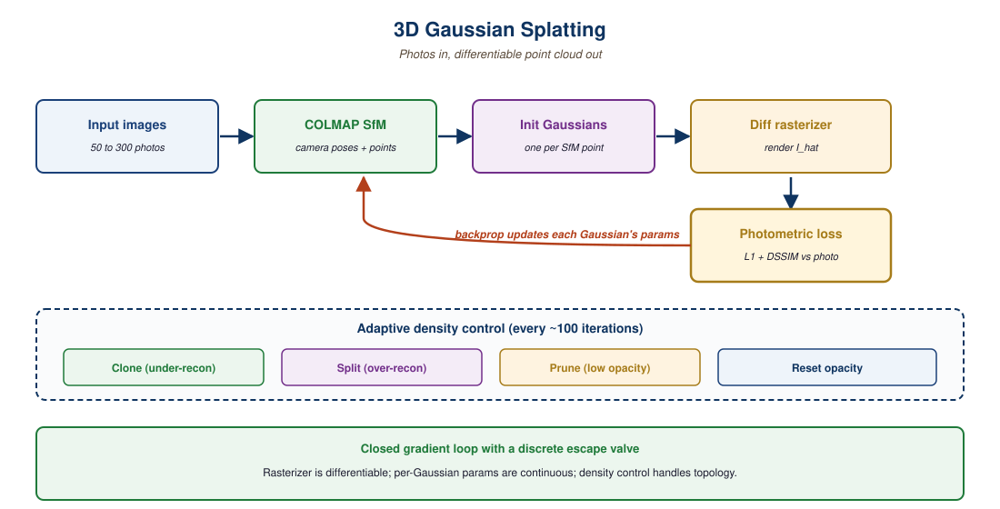

3D Gaussian Splatting and neural scene representations are the bridge between 2D vision models and the volumetric world models that simulation and AR need. This section covers the math, the training recipe, and the inference path.
3D Gaussian Splatting (3DGS) is the answer to "what data structure represents a 3D scene if you want both photo-real rendering and gradient-friendly editing?". A scene is a cloud of millions of anisotropic 3D Gaussians, each carrying a position, a covariance, an opacity, and a view-dependent color. Rendering an image projects them to screen-space ellipses and alpha-blends. Training back-propagates pixel loss into Gaussian parameters and dynamically adds, removes, and splits Gaussians where reconstruction error is high. The result, demonstrated in the original 2023 paper by Kerbl, Kopanas, Leimkuehler, and Drettakis, is a representation that trains in 30 minutes and renders at 100+ FPS on a consumer GPU.
By 2025, 3DGS had displaced NeRFs in essentially every production-facing pipeline (scene capture, content creation, robot perception, real-to-sim). This section explains why, walks through the training pipeline, surveys the 2024-2026 extensions to 4D (time-varying scenes) and few-view reconstruction, and offers a conceptual bridge: a Gaussian, like a transformer key, is an addressable unit whose parameters the model learns to update.

41.3.1 Why Gaussians instead of neural fields?
NeRFs (Mildenhall et al., 2020) parameterize a scene as a neural network mapping (3D point, view direction) to (color, density). Rendering requires marching hundreds of rays through that network per pixel, which is slow at training time and slower at inference. Gaussian splatting flips the representation: instead of an implicit function evaluated by a network, the scene is an explicit set of primitives evaluated by a tile-based rasterizer. The rasterizer is friendly to GPU sort-and-blend kernels in a way ray marching is not. Rendering becomes embarrassingly parallel and trivially fast.
An attention block stores a learned bag of keys; given a query, it weighs each key and aggregates values. A Gaussian splat stores a learned bag of 3D primitives; given a pixel ray, it weighs each Gaussian by its projected opacity and aggregates colors. The bridge is closer than the visual difference suggests: both are sparse, content-addressable, differentiable, and grow or shrink in count during training. The conceptual move from Section 4.2 (attention) to 3DGS is "what if the keys were locations in space and the values were colors?".
Make the analogy precise. The scaled dot-product attention from Section 3.3 takes a query, scores it against every key, softmaxes, and aggregates values. Splat rendering takes a camera ray (the query), scores it against every Gaussian (the keys) via projected opacity, alpha-composites front-to-back (the soft pool), and aggregates view-dependent colors (the values). Compress this further: a million-Gaussian scene is structurally identical to a million-entry KV cache from Section 10.3, with positional addressing instead of token-index addressing. The optimization tricks (sort once, render many; tile, then aggregate) are the same family of ideas as paged attention.
41.3.2 The training pipeline (COLMAP to splat to render)
The end-to-end pipeline from a phone video to a renderable splat in 2026 is short enough to fit on one screen:
# 1. Estimate camera poses from a video or photo set with COLMAP
colmap automatic_reconstructor --workspace_path scene/ --image_path scene/images
# 2. Train a splat with nerfstudio's splatfacto pipeline
ns-train splatfacto --data scene/
# 3. View interactively or render a flythrough
ns-viewer --load-config outputs/scene/splatfacto/.../config.yml
ns-render --load-config ... --output-path flythrough.mp4Nerfstudio (which exposes the splatfacto pipeline) and gsplat (the underlying differentiable rasterizer) are the canonical libraries. Training time on a single RTX 4090 for a typical room-scale scene is 15 to 40 minutes; rendering at 1080p is 60 to 200 FPS depending on Gaussian count. The output is portable: the .ply file with the Gaussian parameters drops into Unreal, Unity, three.js, or directly into a Gaussian-splat web viewer.
The "split where error is high, prune where opacity is low" densification loop in 3DGS is the same routing logic as sparse attention and MoE token routing from Section 4.3, and the KV-cache eviction heuristics from Section 10.3. Compute moves to where signal lives. In an LM you spend FLOPs on the experts that matter for the current token; in 3DGS you spend Gaussians on the volumes that matter for the current image.
The spherical-harmonic coefficients per Gaussian are a frequency-domain basis for view-dependent color. They serve the same role as sinusoidal positional encoding or RoPE from Section 4.1: a learned-coefficient frequency basis lets the model express any function on the sphere up to the chosen degree, just as Fourier features let the model express any function over a 1D sequence. Read SH as RoPE-on-a-sphere and the 32 coefficients per channel become familiar.
41.3.3 4D splats: scenes that move
Static 3DGS captures geometry. 4D splats capture geometry through time and are the 2024-2025 extension. The dominant approach (4DGS, Wu et al. 2024) parameterizes each Gaussian's position and color as a small MLP conditioned on time, plus a deformation network that warps a canonical splat through frames. The training data is a multi-view video; the result is a renderable scene you can scrub through in time. By late 2025, Spacetime Gaussians and Shape of Motion had pushed quality far enough that 4D splats are used in volumetric video productions and as backdrops for synthetic-training-data pipelines.
41.3.4 Few-view: when you do not have a video
InstantSplat (Fan et al., 2024) tackled the "I have 3 photos, not 300" problem by pairing a sparse-view monocular depth estimator with a Gaussian-splat optimizer. The result trains in seconds rather than minutes and accepts as few as 3 input images, with quality that degrades gracefully. By 2026 the InstantSplat lineage had merged with DUSt3R-style geometry priors, producing pipelines where a single phone photo plus a depth model is enough for a usable (if low-fidelity) splat.
41.3.5 NeRFs, 3DGS, InstantSplat compared
| Method | Training time (room scene, RTX 4090) | Render speed (1080p) | Inputs needed | Quality (PSNR proxy) | Best for |
|---|---|---|---|---|---|
| Original NeRF (2020) | ~12 hours | ~0.05 FPS | 50-100 posed images | 26-30 dB | Research baseline only; production-obsolete |
| Instant-NGP (2022) | ~5 minutes | ~5-10 FPS | 50-100 posed images | 28-32 dB | Fast NeRF baselines; still used as gold-standard quality |
| 3DGS (2023) | ~15-40 minutes | 60-200 FPS | 50-100 posed images | 30-35 dB | Default production pipeline; VR / AR; real-to-sim |
| InstantSplat (2024) | 10-60 seconds | 60-200 FPS | 3-12 unposed images | 24-29 dB | Mobile capture, rapid prototyping, low-data setups |
For a 1080p frame: NeRF needs ~2 million pixel rays times ~128 sample points per ray times one MLP forward = ~256M MLP evaluations. A Gaussian splat needs to sort ~1M Gaussians by depth into ~16x16 pixel tiles and blend them, which is one rasterizer pass. On the same GPU, the Gaussian pass is ~100-200x faster. The mathematical content of "why splats win" is just "explicit primitives parallelize better than implicit fields on current hardware".
41.3.6 Why splats matter for embodied AI specifically
For robotics and embodied AI, 3DGS is not a rendering trick; it is a scene representation. Three practical consequences. First, real-to-sim: capture your factory floor on a phone, train a splat, drop it into Isaac Sim as the background, and your simulator now matches reality. Second, policy conditioning: a VLA can be conditioned on a splat rendering of the environment from the robot's actual viewpoint, closing one source of visual distribution shift. Third, scene editing: because Gaussians are explicit primitives, you can delete a chair, move a table, or insert a new object directly in 3D, then re-render. NVIDIA's 2025 work on robot-policy training with splat backgrounds reported 12 percentage points of sim-to-real gain over textured-mesh baselines.
A million-Gaussian scene is a compressed, differentiable, queryable representation of a high-dimensional signal (the radiance field), structurally analogous to the role text embeddings play for documents in Section 22.1. You can do nearest-neighbor over splat embeddings, edit specific Gaussians (the "feature steering" of geometry, see Section 11.3 for the text analogy), and compose them. The Gaussian Splatting SLAM paper (Matsuki et al., 2024, arXiv:2312.06741) is the most literal demonstration that a splat is a memory the robot reads from and writes to.
DreamFusion-style text-to-3D pipelines (Poole et al., 2022, arXiv:2209.14988) use Score Distillation Sampling: a frozen text-to-image diffusion model from Section 31.1 acts as a critic, and gradients flow back through it into the 3D Gaussians. This is RLHF (Section 20.1) with the diffusion model as the reward model and the 3D representation as the policy. SDS is the same algorithm pattern Module 20 describes, with a different critic and a different action space. LGM (Tang et al., 2024, arXiv:2402.05054) pushes this further: tokenize the 3D scene and run a transformer over the tokens, making the parallel to text language models explicit.
The smallest useful working set: gsplat (the differentiable rasterizer as a PyTorch extension), nerfstudio (training pipeline with splatfacto), COLMAP (camera pose estimation), and antimatter15/splat (a 200-line WebGL viewer). That stack covers capture-to-render-to-share end to end.
41.3.7 What splats still cannot do
Splats are not a free lunch. They struggle with transparent and reflective surfaces (glass, water, polished metal); they need known camera poses (COLMAP fails on textureless scenes); they can drift on long capture sequences where loop closure is poor; and the file sizes (50 to 500 MB for a typical scene) are awkward for streaming over slow connections. The RD-GS and c3dgs compression lines push sizes down 5 to 20x and are the production answer to the streaming problem.
Section 41.4 turns from scene representation to scene imagination. Where 3DGS captures the world as it is, world models predict the world as it will be: next frame, next event, next consequence of an action. The connection back to language modeling is direct, and that is exactly the parallel we examine next.